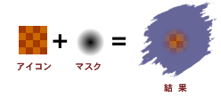

アイコンは Finder 上でいくつかのサイズで表示されます。一般的なものとしては、大アイコン(32 x 32 ピクセル) と小アイコン(16 x 16 ピクセル) があります。アイコンは1つのサイズを作成すれば他のサイズは自動的に拡大縮小されて表示されますが、より良い表示結果を望むのでしたら各サイズのアイコンを作成する必要があります。
その他に2つのアイコンサイズがありますが一般的には使用されません。最大アイコン (48 x 48 ピクセル) はいままでの Mac OS の Finder では使用されませんが、MacOS X Server や、おそらく近い将来リリースされる予定の一般向け MacOS X で使用されます。最小アイコン (16 x 12 ピクセル) はめったに使用されることがありませんので、現在リリースされているバージョンの“Iconographer”ではサポートしていません。
アイコン色深度
-
各サイズのアイコンには各種の色深度(色数)のものが含まれています。これは、あなたの作成したアイコンに白黒、16色、256色、1670万色とさまざまな色深度のアイコンを持たせることが出来るということです。Finder はその画面上で使用出来る色深度のアイコンを自動的に選択します。アイコンは1つの色深度のものを作成すれば、画面の色数が不足している場合アイコンは自動的に減色されて表示されますが、より良い表示結果を望むのでしたら各色深度のアイコンを作成する必要があります。
アイコンマスク
各アイコンがアイコンピクチャーとアイコンマスクの2つから成り立っていることは良くわからないかも知れませんが、アイコンマスクとは実際に表示されるアイコンを御覧になるとわかると思いますがアイコンは正方形ではなく画像内の各種形状に切り抜かれて表示されます。そのためにアイコンの表示する部分と透明にして表示しない部分とを設定するものがアイコンマスクです。下の画像でアイコンマスクがどのように機能するかを説明します：

上の画像からわかるようにアイコンマスクの外側の白色の部分のアイコンは表示されずにデスクトップが見えます。この２色の単純なアイコンマスクでは黒色がアイコンを実際に表示する色で白色がアイコンを透明にして表示しない色となっています。MacOS 8.5 以降で追加された8 bit のアイコンマスクをサポートしました。これは、白色から黒色までの256色のグレースケールグラデーションでアイコンをマスクすることが可能になります。白色や黒色ではないその中間の灰色はアイコンと背景を半透明にするために使用します。下の画像は、8 bit のアイコンマスクがどのように機能するか説明するものです：

上の画像の結果でアイコンの周囲がデスクトップに溶け込んだように表示されているのがわかると思います。そのため、どのような色の背景にアイコンを置いた場合でもきれいに溶け込んで表示されるでしょう。8 bit のアイコンマスクは半透明のアイコンを作ったり、アイコン周囲のギザギザした部分を滑らかにしたり、下に落ちた影などの視覚効果のために使用することが出来ます。
アイコンの形式
旧形式：この形式は、Mac OS 8.5 以前のシステムで使用されています。1-bit から 8-bit までの、32 x 32 と16 x 16 ピクセルのアイコンで構成されています。この形式は、文書アイコンや十分な互換性(MacOS 8.5 以降でも表示することができるため)を得るためにも最小限必要です。
新形式：この形式は、Mac OS 8.5 から採用されたものです。32-bit のアイコンと 8-bit のマスク、48 x 48 サイズのアイコン(通常 Finder で直接使用されることはありませんが、 Sherlock 2 の検索ボタンなどで使用されています)が追加されました。これらのアイコンは今までのものと全く異なる形式で保存されているため古いシステムでは表示することは出来ません。
汎用：旧形式と新形式のリソースを同じ ID で同じファイルに結合する見せかけの形式です。その結果、アイコンはどのシステムでも表示することが可能になります。また、MacOS 8.5 以降のシステムで表示される場合、より良い描画結果が得られます。これにより、わずかですがファイルサイズが大きくなってしまいます。